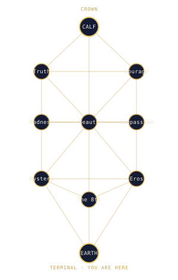

Our Cosmology
Every travel company needs a map. Ours is older than maps.
Reality is a tree. Ten stations of light descend from a single source; the material world is the last stop on the line. Mystics have always known the timetable — the trick is running it in reverse, circulating energy up the branches instead of letting it pool, forgotten, at the bottom. Astral Spaceways operates scheduled service along this network. Our hub is the Crown, where the First God sleeps. Our eight waypoints are the angels.
The Route Network

Hub: the Crown · Waypoints: the eight angels · Terminal: Earth (you are here)
The eight gates, as waypoints
Beauty · Mystery · Eros · Madness · Compassion · Courage · Truth · and an eighth gate we do not name, because you will name it yourself.
Mystery — the aspect of reality that seduces you. The nature of things is in the habit of concealing itself. We fly there anyway.
Beauty — not the smooth, the lacquered, the balloon-bright. The alarming kind. Handle with care.
Each gate is a destination in its own right. See the Angelic Switchboard.
The destination behind the destinations — the Gift World
Every itinerary is, secretly, the same itinerary. Past lives, sideways Earths, the throne rooms of dead gods — all of it is scenic routing toward one terminus we call the Gift World: a reality that is fully ensouled, where warmth, connection, and the red-blooded human passions are the ordinary weather. We are not there yet. No one is. But we sell tickets in the direction of it, and direction is most of travel.
A delegate of humanity
Astral Spaceways is a devotional enterprise of the Herd of God. We are, in the most literal sense, a small congregation with a beautiful map. Fly with us and you are not merely a customer. You are, whether you meant to be or not, a delegate of humanity.